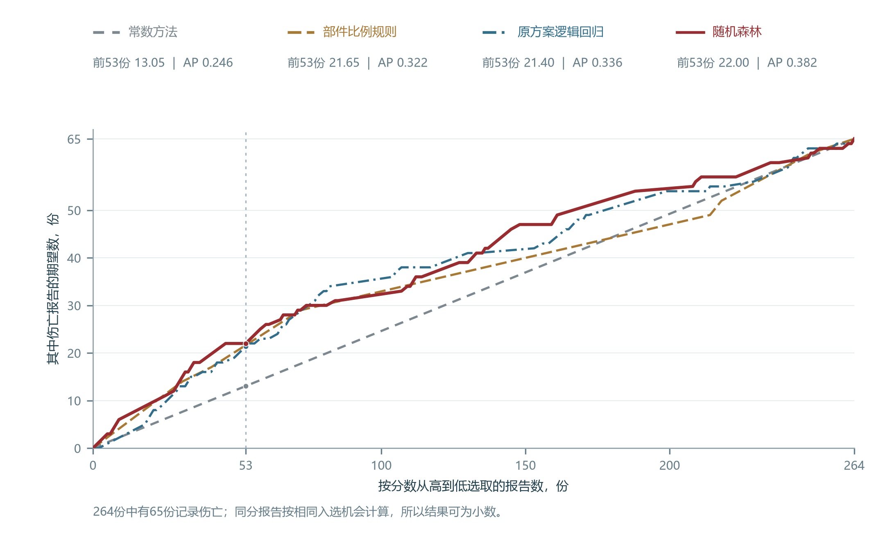

3.1 用已知事故线索给出伤亡概率与分类
第二章比较了同种部件在不同场地的人员后果。本章据此检验：联合使用部件、材料、地点和地区等级，能否比单独参考部件经验更好地识别伤亡报告。模型先估计已报告事故伴随伤亡的概率，再按预先确定的门槛给出类别。伤亡指报告记录至少一人死亡，或因伤住院至少一晚。
部件与材料说明事故涉及什么设施，地点与地区等级说明设施所在的环境。本章以20220002号钢制室外表具／调压装置事故为例，说明计算和使用：评分时输入下列类别，再与该案的人员记录对照。
| 输入 | 含义 | 本章示例 |
|---|---|---|
| 部件 | 事故涉及的管道或装置类别 | 室外表具／调压装置 |
| 材料 | 涉事部件记录的材料 | 钢 |
| 地点 | 报告中的场地类型，如公共地点、私人地点 | 私人地点 |
| 地区等级 | 对周边建筑和人员聚集情况的分类 | 3级地区 |
概率分数保留高低差别，便于比较报告；分类则直接给出判断结果。分数达到或超过门槛时判为伤亡，低于门槛时判为未记录死亡或上述住院伤害。每种方法的门槛在早期资料中确定，评价近年来报告时保持不变。
我们用2010至2021年收到的1,286份报告学习，对2022年起收到的264份报告评分，并与其中65份伤亡报告的既有记录对照。近年来资料已参与探索，因此结果属于对现有事故记录的回顾评价。管龄、管径、压力和人员活动用于前章的情境解释，本章模型使用部件、材料、地点和地区等级。
联合判断需要与简单经验比较。常数方法对所有报告都给出早期伤亡比例23.64%，代表不区分设施的判断。部件比例规则采用各部件在早期报告中的伤亡比例，示例所处的室外装置组为17.73%。研究计划采用四项类别合用的无惩罚逻辑回归，下文称原方案逻辑回归；随机森林使用同样的输入。两种联合模型与常数、部件比例在同一批报告中对照，检验增加条件后的判断价值。
3.2 逻辑回归与决策树的判断依据
部件比例规则对同一部件的报告给出相同分数，联合模型还依据材料、地点和地区等级区分报告。原方案逻辑回归根据早期报告的已知人员结果估计类别系数；使用时，报告所属类别的系数与截距相加，总和再转换为0到1之间的概率。
计算可写为：z＝截距＋部件项＋材料项＋地点项＋地区等级项；p＝1／[1＋exp(−z)]。每一项表示该类别相对于参照类别的系数；参照类别的该项为0。原方案以主管道、钢、公共地点和3级地区为参照。因此，钢制室外装置示例使用室外装置项、私人地点项和截距，材料与地区等级沿用参照，预测概率为20.08%。
决策树按条件划分训练报告，最终的分组称为叶节点。叶节点中的伤亡比例用于估计新报告的伤亡概率。图 16是随机森林中的第一棵完整树，保留4个问题和5个终点。它先区分进户管，再在其余部件中按材料细分，材料比较因此限于其余部件。
第一棵树按部件和材料分组，叶节点给出伤亡比例


钢制室外装置的单树评分依据，可以沿图中的条件逐步找到。从最左侧问题开始，示例的部件为室外装置、材料为钢，四个问题都答“否”，进入右下方一组。终点饼图的深红份额表示伤亡比例：该组560条训练记录中107条有伤亡，单树概率就是107／560＝19.11%。树中按抽样出现次数计“条”，同一原始报告可以重复出现；本树的1,286条记录来自830份不同报告。“份”始终指不同的原始报告。
第一棵树只用了部件和材料，森林的其他树也可使用地点与地区等级。同一份报告会分别经过250棵树，森林对各树给出的概率取算术平均，示例得到21.76%。图 17的柱形合计250棵，显示各树给出的分数分布；森林平均线位于第一树分数与既定门槛之间。平均结果综合了不同抽样和分组的判断，减少了对一次分组的依赖。
250棵树对同一事故给分，平均后得到森林概率

3.3 森林改善整体排序，固定门槛仍有漏判与误报
同一批报告既可以按概率排序，也可以按门槛分类，两种用法需要分别检验。我们用常数方法、部件比例规则、原方案逻辑回归和随机森林，对相同264份近期报告评分。比较先在相同53个名额下核对识别数量，再考察伤亡报告在整个排序中的位置，最后统计固定门槛的漏判和误报。
同样的选取数量能够直接比较各方法识别多少伤亡报告。图 18从高分到低分逐步选取报告，横轴是选取的总份数，纵轴是其中实际伤亡报告的期望份数。同样的横坐标上，曲线越高，表示选中的伤亡报告越多。常数方法对所有报告赋予相同分数，因此形成等机会选取的直线参照。
同选前53份时结果接近，森林改善整批排序



同选53份时，联合模型的识别结果与部件经验接近。53份约占整批报告的五分之一，对应图中的竖线；部件规则、原方案回归和森林的读数都约为21至22份，明显高于常数参照的13.05份。区分部件已带来前端的大部分识别增加，森林在部件规则之上只多约0.35份。同分报告按相同入选机会计算，所以结果可以是小数。53份用于展示相同选取数量下的比较，未据此确定企业实际工作量。
相对部件比例规则，森林的伤亡报告总体排得更靠前。平均精确率AP概括伤亡报告在整个排序中出现得有多靠前，数值越高表示排序表现越好。森林为0.382，部件规则为0.322；两者差值的95%区间为0.017至0.115。原方案回归的AP为0.336，相对部件规则的差值区间跨零。虽然前53份的结果接近，但森林改善了整批排序。因此，判断排序方法的价值需要明确选取范围，部件比例仍是前端识别的重要参照。
固定门槛分类还要核对错误的方向。实际有伤亡却判为其余，称为漏判；实际未记录死亡或上述住院伤害却判为伤亡，称为误报。图 19上方逐步降低门槛，横轴显示全部65份伤亡报告中识别出的比例，即召回率；纵轴显示判为伤亡的报告中实际伤亡的比例，即精确率。圆点标出各方法在早期已经确定的门槛，下方矩阵给出对应的真实份数。
固定门槛下，森林比原方案回归少漏判1份、多误报29份


原方案回归识别33份伤亡、漏判32份、误报47份；森林识别34份、漏判31份、误报76份。森林只多识别1份伤亡，却多了29份误报。在本批记录和既定门槛下，原方案回归提供了误报较少的分类结果，森林的优势主要体现在整批排序。部件规则虽然识别62份伤亡，也将187份其余报告判为伤亡；常数方法则将264份全部判为伤亡。因此，选择门槛分类方法时，需要同时核对识别出的伤亡和伴随的误报，AP较高只支持排序表现的判断。
概率分数能否反映实际的伤亡比例，需要对照预测与实际记录。按相近分数分组后，可以比较模型给出的预期伤亡份数与实际份数；本次检查发现，各分数范围的符合程度不同。资料说明中的完整分组图展示了预测与实际的差距。
3.4 增加资料后总体表现接近，入选报告的场地构成改变
森林与部件规则的比较同时更换了算法和输入，因而还要单独检查增加资料的作用。我们采用同一种L2逻辑回归，固定约束强度C＝0.05、类别处理方式、训练报告和评价报告，仅改变输入组合。L2约束会限制系数过大；“仅部件回归”与直接采用历史比例的“部件比例规则”分开计算。
固定L2回归后，补充材料、地点和地区等级的整体识别增益尚不明确。图 20左侧的仅部件与四项合用两个点几乎处在相同位置，AP只增加0.0022，差值区间同时容许下降和提高。共同选取前53份时，两种回归覆盖的伤亡期望份数也接近，分别为21.65和21.44份。
增加资料后整体识别表现接近，入选报告的场地构成改变


联合输入的变化还体现在前53份所覆盖的事故情境。图右侧按四项回归减仅部件回归计算，私人地点的伤亡报告平均多入选2.73份，公共地点少入选2.77份，其余地点的净变化较小。计数依据固定53个名额下的入选机会，门槛分类的错漏另在3.3评价。场地变化来自材料、地点和地区等级共同加入。
两份公共地点的钢制进户管伤亡报告说明了排名变化涉及的具体情境。20240034和20250022的四项类别均为钢制进户管、公共地点、4级地区；仅部件回归分数约32.2%，四项回归约25.6%，两份均退出前53份的选取范围。前者的原案记录了仍有燃气的管线被误记为废弃后切断，后者记录了公园建筑内泄漏及点火。
不同资料组合提供的识别信息，可以在固定回归下直接比较。图 21保留四项资料的全部15种非空组合，每行的实心方块表示采用该项资料，空心方块表示省略；中间圆点比较整体AP，右列比较相同53个名额中的伤亡期望份数。先对照突出显示的仅部件与四项回归，再看其他组合的位置，就能检查不同输入下的总体表现。
15种输入组合使用同一种L2回归，比较总体排序与前53份


本次结果支持保留仅部件回归作为输入比较的简明参照。增加资料后，总体识别表现接近，但前53份中私人地点的伤亡报告增多、公共地点减少。评价补充资料的价值，需要同时比较整体成绩和具体场地的入选变化；两份退出前53份的公共地点事故说明了总体指标容易忽略的漏选情境。
3.5 同一宗室外装置事故的判断与保护核对
一宗除雪拖拉机撞击钢制室外表具的事故，可以说明模型分数怎样与现场记录一起理解。20220002号事故的四项输入是钢制室外表具／调压装置、私人地点、3级地区。图 22列出同一输入下各方法的分数与既定门槛；森林估计伤亡概率为21.76%，低于早期确定的23.37%门槛，判为未记录死亡或上述住院伤害，与该案记录一致。
同一宗室外装置事故的输入、分类与保护核对


各方法以自己的固定门槛决定类别。部件规则的17.73%超过其13.64%门槛，判为伤亡；原方案回归的20.08%低于其23.56%门槛，判为其余。常数方法的分数等于门槛，按“达到门槛即判伤亡”的规则分类。该案演示计算与使用，3.3的整批评价说明工具表现。
原案记录，碰撞后调压器入口短管断裂并泄气，报告记录了火灾和爆炸。8名居民在碰撞后立即疏散，10:35通过进户管阀门止漏；报告未记录死亡或需住院至少一晚的伤害。碰撞防护、止漏与疏散的具体核对依据来自现场记录。企业复盘这类事故时，可以核对室外表具与车辆作业区域的碰撞防护、止漏阀门的位置及可达性，以及居民疏散安排。
本研究从管网与事故比较中提出设施检查线索，再沿人员身份和事故经过明确保护应覆盖的任务。概率与分类模型提供基础类别的判断结果，整批回顾评价说明识别收益和错漏。企业复盘具体事故时，可以对照部件经验、模型输出与原案记录，核对设施状况、作业过程和人员保护事项。
资料与计算说明
原方案回归、树与森林的计算范围
原方案逻辑回归采用四项类别的主效应，不含交互项，也不施加系数惩罚。部件采用七类分析分类、材料采用五类；少量部件类别及铜、球墨铸铁分别归入其他类，地点与地区等级各四类。公式的参照类别为主管道、钢、公共地点、3级地区。同一报告的20.08%来自保存的原方案预测列；固定L2模型另给出21.66%，两种设定的预测分别记录。
每棵森林组成树从早期报告中有放回抽取1,286次。第一棵树抽到830份不同报告，计入重复后为1,286条；一份报告被抽到三次，就计三条。全部9个节点包括4个问题和5个叶节点，叶节点的伤亡比例按抽样出现次数计算。不同树使用不同抽样，选择问题时也随机考虑一部分候选条件。森林使用250棵树、最大深度4、叶节点最小样本数25，拟合种子为20261107。
图 17表示同一报告的250个逐树概率，并非250宗事故，也不是置信区间。原完整流树的PNG与PDF保留抽样记录流向，可与当前完整树对照。

学习、门槛选择与回顾评价
先用截至2017年收到的837份报告拟合，用2018至2021年的449份报告选择参数与门槛，再用截至2021年的1,286份报告重新拟合。常数参照来自早期304／1,286份伤亡报告，部件规则来自各部件的早期比例。两项参照均不使用近期评价报告的伤亡结果计算分数。
部件规则、原方案回归和森林的门槛按早期验证资料中最高F1选择，分别为13.64%、23.56%和23.37%。F1是精确率与召回率的调和平均。常数方法的分数与门槛均为23.64%，因此全部报告被判为伤亡。分类使用未四舍五入的分数和门槛。
使用的是当前保存的报告内容，收件年决定早晚分组。1,550份中有1,011份标为补充报告，其中850份属于较早收件时期；原表缺少逐字段修订时间。结果描述现有记录中的识别表现，输入的事故前可得性仍需另行验证。
AP差值区间按近期评价报告中的93家运营商整组重抽样1,200次计算。每次共同抽取两种方法对应的同一批报告，逐份预测保持固定。区间表示运营商构成变化下的差值波动，不包含重新拟合和选参的不确定性。
排序、选取数量与门槛分类的读数
AP按分数从高到低逐组纳入报告，计算各阶段的精确率，再按该阶段新增伤亡报告占全部伤亡报告的比例加权。它概括整个排序。累计选取曲线则在每个整数选取数量上，计算前端的伤亡期望份数；两者都不等于固定门槛的一次分类。
同分组只选一部分时，伤亡期望份数＝已完整选中的伤亡份数＋剩余名额×同分组伤亡份数÷同分组总数。例如部件规则取前53份，计算为17＋12×12／31＝21.65份。全部曲线从0开始，选满264份时达到65份。复算程序可读取逐份预测，核对全部1,060个累计读数。
| 方法 | AP | 判为伤亡，份 | 正确识别，份 | 误报，份 | 漏判，份 | 精确率 | 召回率 |
|---|---|---|---|---|---|---|---|
| 常数方法 | 0.246 | 264 | 65 | 199 | 0 | 24.6% | 100.0% |
| 部件比例规则 | 0.322 | 249 | 62 | 187 | 3 | 24.9% | 95.4% |
| 原方案逻辑回归 | 0.336 | 80 | 33 | 47 | 32 | 41.3% | 50.8% |
| 随机森林 | 0.382 | 110 | 34 | 76 | 31 | 30.9% | 52.3% |
森林精确率为34／110＝30.9%，召回率为34／65＝52.3%。常数方法没有漏判，也将全部199份其余报告判为伤亡；23.64%是早期赋分，24.6%是近期核对所得精确率。原方案回归相对部件规则的AP增量为0.014，95%区间为−0.033至0.066。
已有概率的可靠性检查
图 S7将保存分数按既定范围分组，空心点为组内平均概率，红点为实际伤亡比例；两点相近，表示该分数范围内的预测与观察较为接近。同一行还保留报告数以及预期、实际伤亡份数，预期份数由组内概率相加得到。各方法的组内成员可以不同，因此绝对差的大小不能直接用来排列方法的整体可靠性。
预测概率与实际伤亡比例在各分数范围内的对照


例如，森林30%至40%分数组有28份报告，概率合计相当于9.22份预期伤亡，实际为12份。其他分数组的偏差方向不同，小组还会对一两份报告较敏感。分数组的描述性差别提示概率量值仍需核对，未进行新的概率校准训练。所有264份报告均保留；没有报告的分数组不画成0%观察点。
概率误差另用对数损失核对：实际伤亡时取伤亡预测概率，未记录伤亡时取其余概率，计算负对数后取平均。值越低，表示模型给实际结果分配的概率越高。常数、部件规则、原方案回归和森林分别为0.5584、0.5480、0.5439、0.5413。
固定L2回归的15种输入组合
消融固定C＝0.05；C越小，系数约束越强。各组合采用相同类别处理、训练时期和评价时期，每次只改变使用哪些资料后重新拟合。四项回归相对仅部件回归的AP差为0.0022，运营商共同重抽样所得95%区间为−0.0379至0.0447，不能据区间跨零宣布两者等效。
图 S8每次从完整四项输入中删去一项。圆点为完整AP减删除后的AP，正值表示保留该项时排序较好；横线为运营商共同重抽样的95%区间。四条区间均跨零，各项资料独立增益的方向仍有较大不确定性。
从完整输入中删去一项，AP差值区间均跨零


| 事故地点 | 伤亡报告平均入选数的变化，份 |
|---|---|
| 私人地点 | +2.73 |
| 公共地点 | −2.77 |
| 公用设施通行权区域 | −0.16 |
| 运营商控制场地 | 0.00 |
| 全部地点合计 | −0.20 |
地点变化按四项回归减仅部件回归计算，同分报告使用相同入选机会。逐类变化与计算保留所有场地及其他原始类别，逐份变化可核对两份公共地点进户管报告的入选变化。
同案示范与数据入口
示例按近期报告编号升序选取第一份20220002号报告，未按人员结果或预测是否正确选择。事故发生于2021年12月，2022年1月收件，因此按收件年属于近期评价资料。原案与保存分数保留现场叙述。图 22的分类均由保存分数和各自早期门槛比较得出。